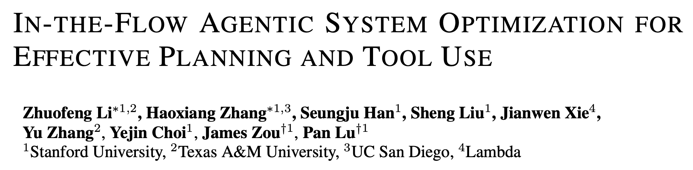
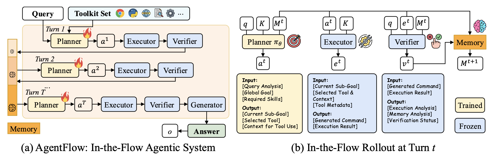
Train the planner of a modular agentic system directly inside the real multi-turn tool-use loop.
Modern RL reasoning methods work well when the task has a verifiable answer.
But real tool-using agents are harder:
AgentFlow moves from model-level training to system-level training.
Many LLM agents use one model to do everything:
think → call tool → read result → think again → answer
This can become fragile when the horizon is long or the tool feedback changes the environment.
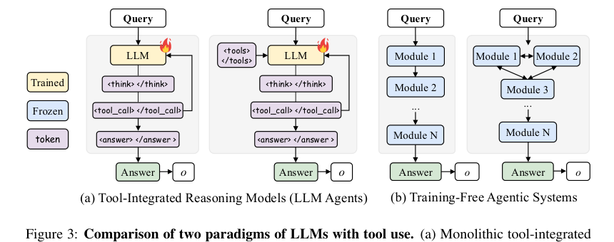
AgentFlow decomposes the system into four modules:
| Module | Responsibility |
|---|---|
| Planner | decides sub-goal, tool, and context |
| Executor | runs the selected tool |
| Verifier | checks whether the result is useful / sufficient |
| Generator | produces the final answer |
Only the planner is optimized.
state = query + toolset + memory
Then the system runs:
Planner → Executor → Verifier → Memory update
The loop stops when the answer is ready or the turn budget is exhausted.
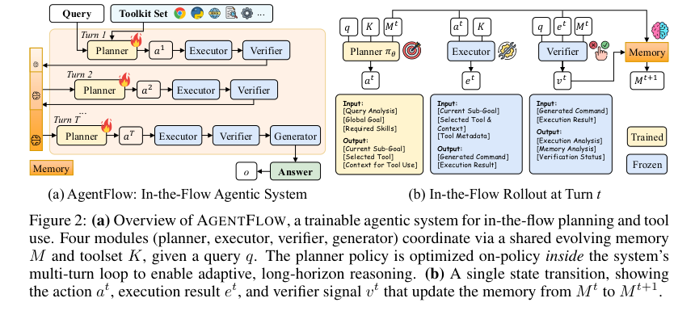
The planner is not trained offline from fixed trajectories.
It is trained inside the actual agent loop:
plan → execute tool → verify → update memory → plan again
This exposes the planner to the real states it will face at inference time.
Flow-GRPO extends GRPO to multi-turn agentic trajectories.
For each query, the system samples multiple complete rollouts, computes final reward, and compares trajectories within the group.
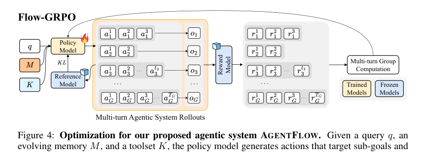
The agent receives reward only after the final answer:
Action 1
Action 2
Action 3
...
Final answer → reward
The challenge: which action caused success or failure?
Flow-GRPO uses a simple strategy:
Broadcast the final trajectory-level reward to every planner action.
For each query, sample a group of trajectories.
Advantage_i = (reward_i - mean(group rewards)) / std(group rewards)
Intuition:
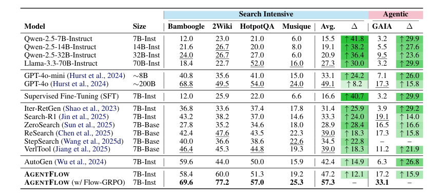
Key reported gains:
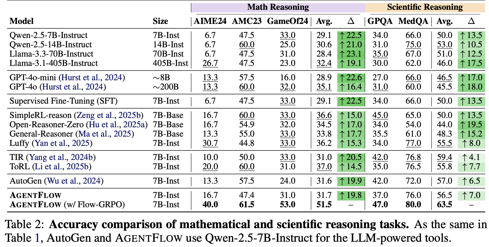
Key reported gains:
The paper compares several planner strategies:
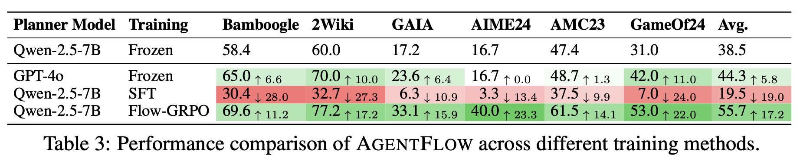
Main lesson:
A stronger planner helps, but training in the real system dynamics matters more.
Before Flow-GRPO, the agent repeats similar failing actions.
After Flow-GRPO, it explores a new solution path and recovers.
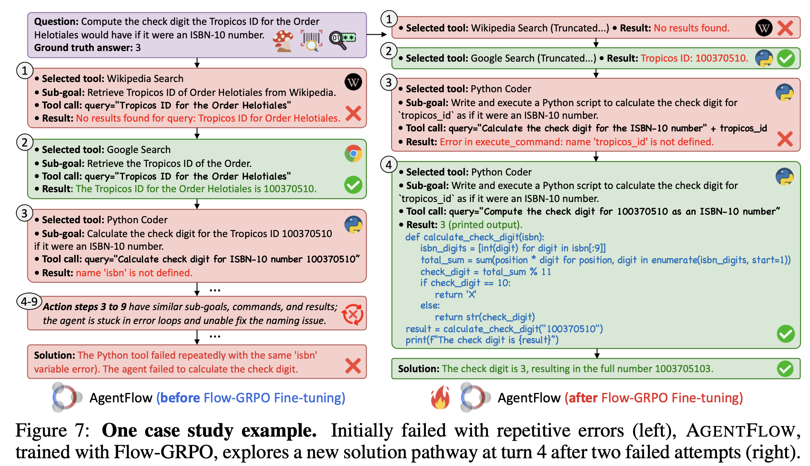
This suggests the planner learns better tool-use adaptation and error recovery.
Flow-GRPO improves reward over training and scales with model size and turn budget.
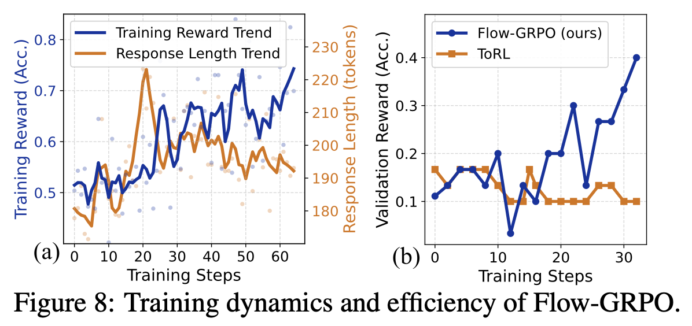
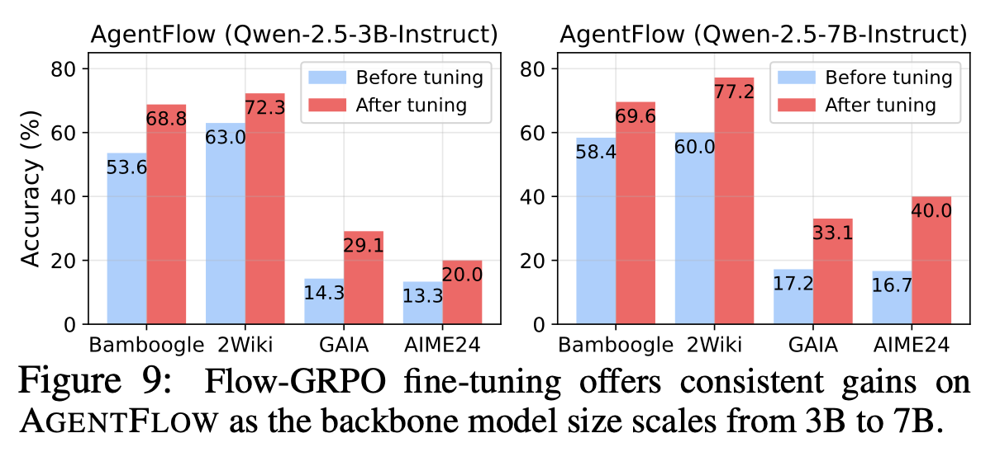
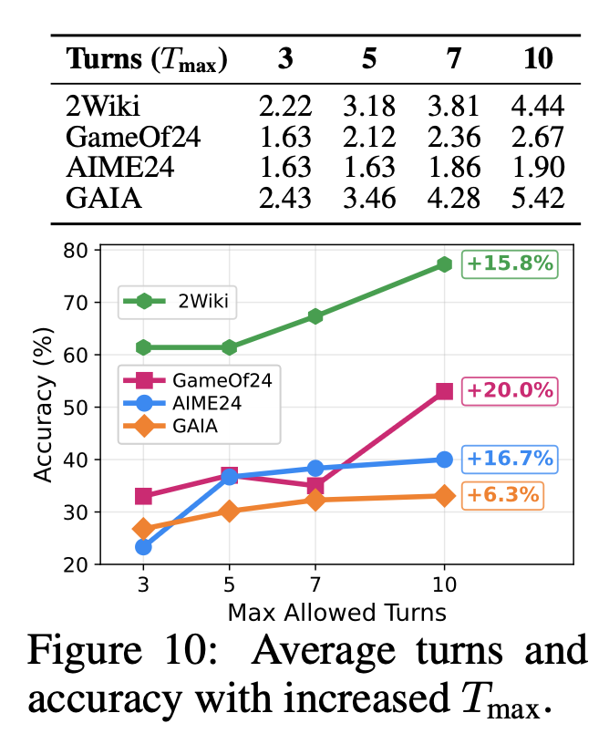
For real-world agentic systems:
AgentFlow reframes the problem:
From: training a reasoning model
To: training an agentic system
The most important insight:
Agent training should happen at the system level, inside the workflow where the agent actually operates.